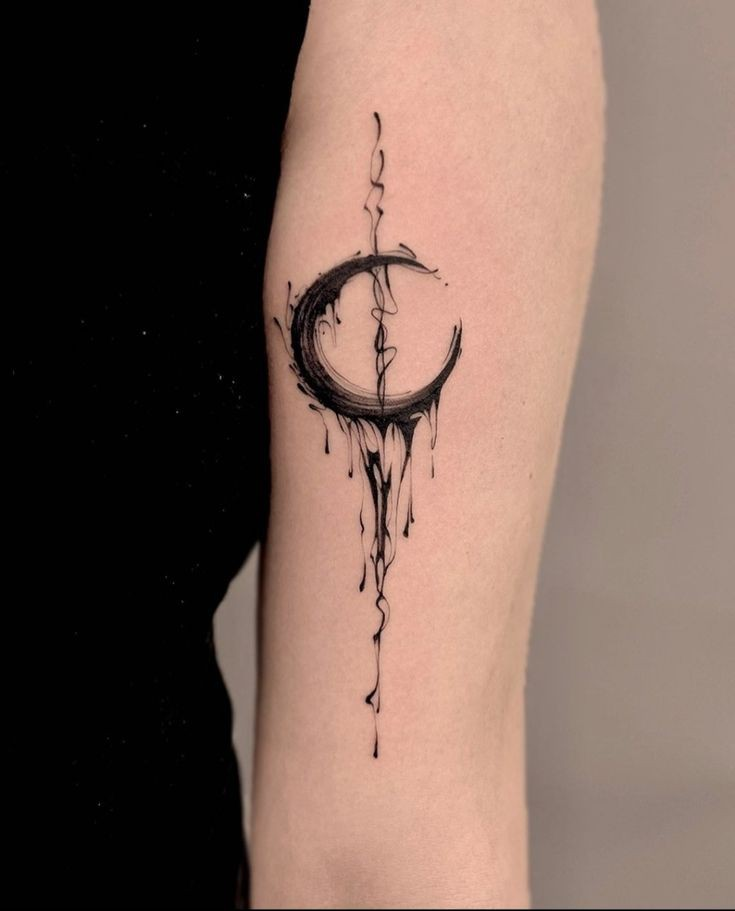
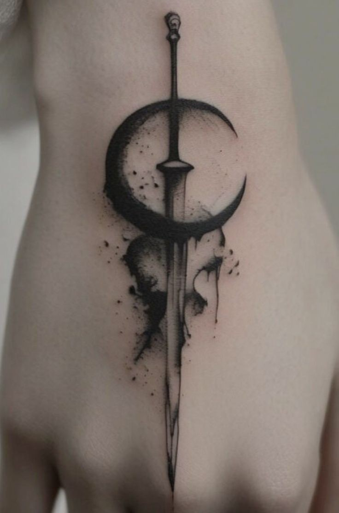

Blackwork tattoos
About blackwork tattoos
- Blackwork tattoos are a striking and versatile style that primarily uses black ink to create bold, intricate designs. This style can encompass a wide range of motifs and themes, from geometric patterns and tribal designs to abstract art and detailed illustrations
- Here are some key elements and concepts associated with blackwork tattoos:
Characteristics
- Solid Black Ink: As the name suggests, these tattoos use solid black ink to create high-contrast, visually impactful designs
- Versatility: Blackwork tattoos can be minimalistic or highly detailed, making them suitable for various styles and preferences.
- Patterns and Shapes: Common motifs include geometric shapes, mandalas, and tribal patterns, but the style is not limited to these and can include any subject matter.
- Contrast and Negative Space: The use of negative space (uninked areas) is often a crucial part of blackwork designs, adding depth and complexity
Cultural Significance
The roots of blackwork tattoos can be traced back to ancient civilizations where tattooing had significant cultural and ritual importance.
Today, while many blackwork designs are appreciated for their aesthetic appeal, some still carry deep personal or cultural meanings for the wearer.


